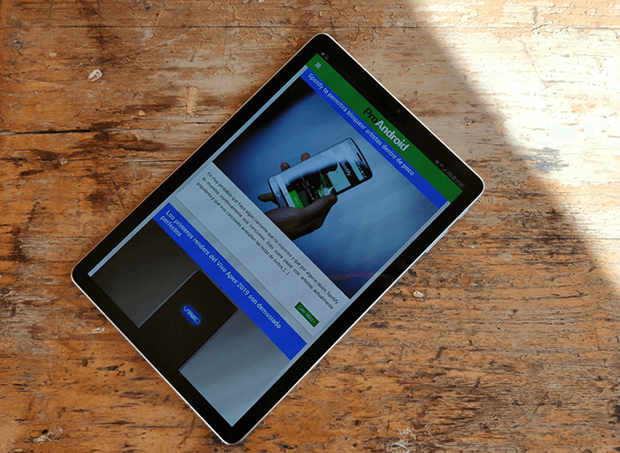

Red paragraph text
Llevamos una semana probando al milímetro todas las funcionalidades del LG V40 ThinQ, el último gran exponente de la gama V que llega al mercado para sorprender. Un terminal en el que destacan dos aspectos principales: un diseño atractivo y unas cámaras versátiles.Cabe destacar que este dispositivo llega a Europa cuatro meses después de su presentación bajo las líneas estéticas conocidas por todos los seguidores de la marca y bajo Android 8 Oreo.
Sin olvidarnos de la típica capa de personalización de LG que no acaba de gustar a todo el mundo pero que resulta bastante cómoda.

Aunque el mercado de las tablets Android no está pasando por su mejor momento, algunas compañías siguen lanzado apuestas muy interesantes para todos los usuarios. Es el caso de Samsung con su Galaxy Tab S4, una tablet que hemos analizado durante unos días y que nos ha dejado con un muy buen sabor de boca. Estamos ante un producto de gama alta destinado a un nicho de mercado que quiere ir más allá del contenido multimedia. Durante el análisis de la Samsung Galaxy Tab S4 nos hemos dado cuenta de que es un producto muy versátil que puede servir para jugar a los videojuegos más exigentes y también para realizar tu trabajo del día a día.
En el mercado actual la mayoría de fabricantes se centran en lanzar productos muy baratos para un público más joven que quiere consumir contenido multimedia en una pantalla más grande que la de su móvil. Samsung además de atacar este nicho, también nos deja anualmente con una tablet de gama alta para los más exigentes.
Últimamente Oppo lo está haciendo realmente bien con los diferentes modelos que está presentando al mercado. Hace dos meses aproximadamente, os trajimos el análisis del Oppo Find X, el gama alta de la firma china que cuenta con uno de los diseños más atractivos y atrevidos del mercado. Hoy en cambio, os traemos el análisis del Oppo RX17 Pro, un teléfono de gama media en el cuerpo de un teléfono de gama alta. Lo hemos probado durante un par de semanas y estas son nuestras opiniones.
Puede que muchos os deis cuenta de la similitud en cuanto a diseño se refiere entre este modelo y el OnePlus 6T y es que OnePlus es una filial de Oppo y muchos de sus diseños vienen heredados de algunos terminales de Oppo. Dicho esto, os dejamos con el análisis completo del Oppo RX17 Pro, un teléfono que nos ha encantado.